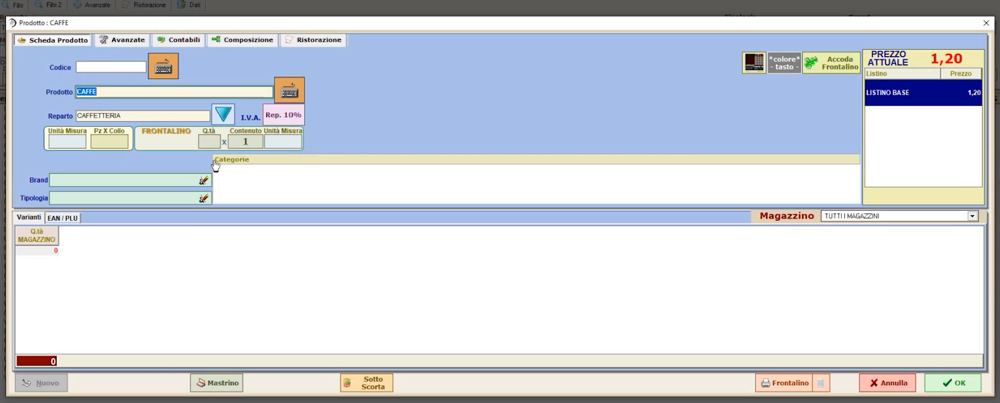
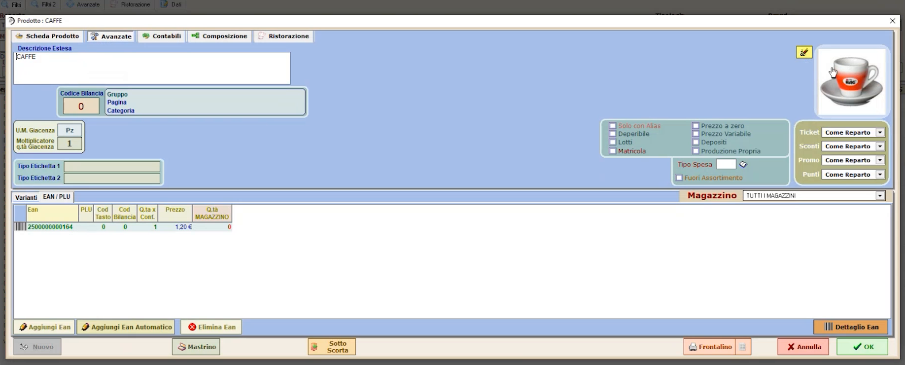
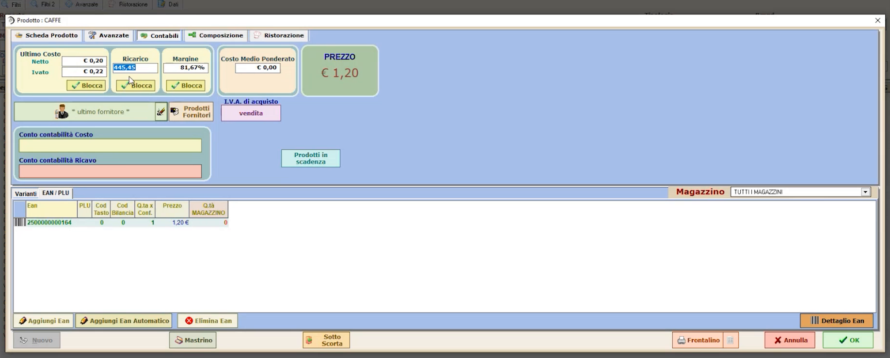
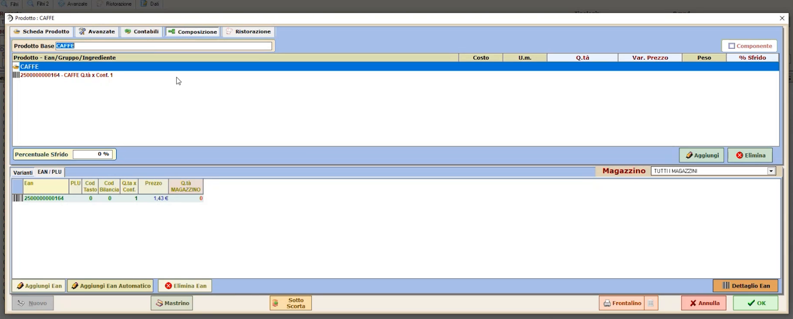

Articoli avanzati
TARGET: tecnico installatore · DURATA STIMATA: 20 minuti
Obiettivo
Usare la scheda Articoli avanzata per completare gli articoli con le informazioni che servono a seconda dell'attività: etichette, brand, varianti, categorie, EAN alternativi, costi e margini, composizione.
Prerequisiti
- Articoli creati con la scheda semplificata (vedi Anagrafica articoli semplificata).
Come aprire la scheda
In Configurazioni generali, pagina 2 di 2, premi ARTICOLI AVANZATA:
trovi tutti gli articoli, compresi quelli creati nella scheda semplificata.
Seleziona un articolo (esempio: CAFFE).
La scheda ha cinque aree: Scheda Prodotto, Avanzato, Contabili, Composizione e Ristorazione.

Scheda Avanzato
Contiene le informazioni aggiuntive da popolare quando l'attività le richiede:
- gestione a pezzi o a chilogrammi (unità di misura);
- frontalini ed etichette: il programma stampa anche frontalini ed etichette, quindi qui si inseriscono le informazioni necessarie a produrne una corretta (ad esempio per un prodotto da scaffale);
- brand, per esempio per gestire i marchi dei capi nel settore fashion;
- varianti articolo (taglie e colori): servono soprattutto ai fini statistici, così come la tipologia;
- categorie: una volta popolate permettono il collegamento con siti di e-commerce (la categoria è l'informazione chiave per l'aggancio);
- EAN alternativi legati allo stesso articolo;
- indicazione che l'articolo verrà inviato automaticamente alla bilancia;
- immagine caricata nella scheda semplificata.

Scheda Contabili
La parte contabile si popola in automatico quando carichi bolle e fatture dell'articolo, oppure puoi inserire i dati manualmente.
Esempio: un caffè costa 20 centesimi tra costo del prodotto, energia elettrica e gestione. Il software genera automaticamente, rispetto al prezzo di vendita, ricarico e margine.

Puoi anche procedere al contrario: partendo dal ricarico desiderato (esempio: 550%) il prezzo di vendita si modifica automaticamente (nell'esempio da 1,20 € a 1,43 €).
Con la funzione Blocca puoi bloccare la marginalità su un articolo: a ogni acquisto il programma può adeguare automaticamente il prezzo di vendita, oppure proporti una variazione di prezzo che sei tu ad accettare.
Scheda Composizione
Permette di costruire la distinta base dell'articolo. Il termine è
riduttivo: puoi comporre anche articoli "cesto". Esempio: un cesto
natalizio composto da una bottiglia di spumante, un panettone e un salame.
Crei l'articolo CESTO NATALIZIO e associ gli articoli che lo compongono:
questo serve a gestire correttamente le quantità di vendita e le
quantità di magazzino.

Verifica
- L'articolo mostra nella scheda Contabili costo, ricarico e margine coerenti con il prezzo di vendita.
- Per un articolo composto, la scheda Composizione elenca tutti i componenti.
Attenzioni
Informazioni da compilare solo se servono
Nella maggior parte dei casi non è necessario compilare tutte le schede: popola le informazioni avanzate solo se l'attività del cliente le richiede (ad esempio etichette, e-commerce, magazzino, fashion).